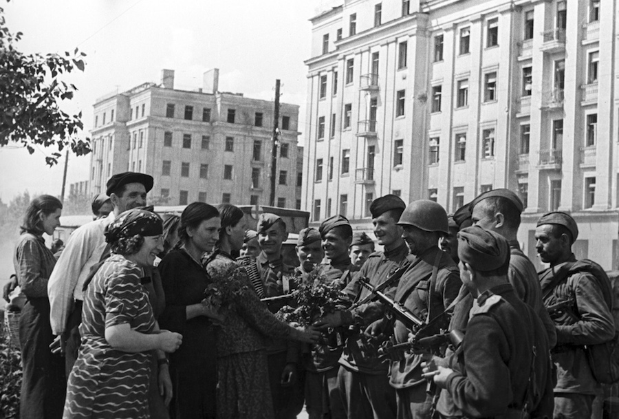

Мінск — горад герой!
Мінск з першых дзён Вялікай Айчыннай вайны апынуўся ў самым цэнтры бітваў. Перадавыя часткі гітлераўскай арміі падышлі
да горада 26 чэрвеня 1941 года.

Фашысты ўсталявалі ў Мінску жорсткі акупацыйны рэжым. За перыяд акупацыі было знішчана вялікая колькасць як
ваеннапалонных, так і мірных жыхароў. Але мужныя мінчане не скарыліся ворагу, у горадзе пачалі стварацца падпольныя
групы і дыверсійныя атрады, у якіх складаліся нават антыфашысты замежных краін. На рахунку герояў-падпольшчыкаў звыш 1,5
тыс. Дыверсій, у выніку якіх у Мінску было падарвана некалькі аб'ектаў ваеннага і адміністрацыйнага значэння, а таксама
неаднаразова выводзіўся з ладу гарадской чыгуначны вузел.
3 ХВАЛІ
бамбавікоў па 47 самалётаў у кожнай 24 чэрвеня 1941 года атакавалі горад
20—30 ХВІЛІН
было паміж бомбавымі нападамі

На пад'ездзе да Менску размешчаны адзін з самых прыгожых і велічных помнікаў героям Вялікай Айчыннай вайны - «Курган
Славы». У 1944 годзе на ўсход ад Мінска ў выніку аперацыі «Баграціён» было ўзята ў акружэнне і запалонена больш за 100
тыс. Нямецкіх салдат і афіцэраў. У 1969 годзе на гэтым месцы быў насыпаны велізарны курган, на вяршыні якога ўсталявалі
абеліск. Агульная вышыня помніка - 70 м.